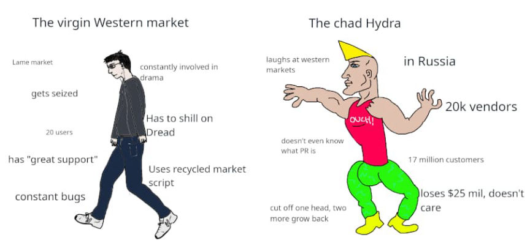
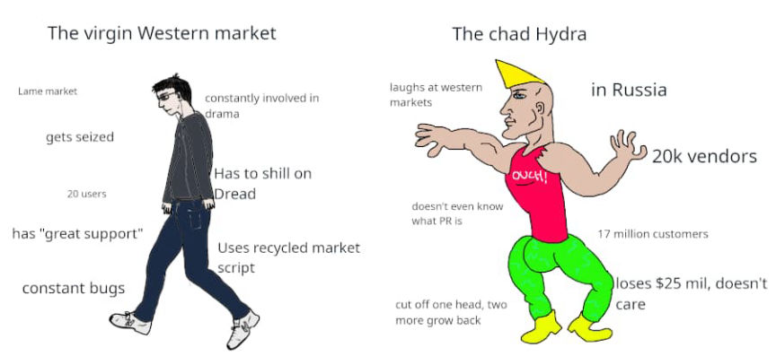

German Police Seized Some of Hydra Market's Servers
Authorities in Germany announced the seizure of Hydra Market’s servers and 23 million euros worth of Bitcoin associated with the market.
Germany’s Federal Criminal Police Office (BKA) seized servers in Germany allegedly used by the administrators of Hydra Market, the largest darkweb marketplace. Authorities also seized Bitcoins worth $25,186,840 (23 million euros). According to the announcement, the Bitcoins are “attributed” to the market.

Law enforcement agencies in Germany and the United States have been investigating the market since August 2021. The investigation involved the BKA, the Central Office for Combating Cybercrime of the Frankfurt am Main Public Prosecutor’s Office (ZIT), the United States Internal Revenue Service - Criminal Investigation (IRS-CI), the Federal Bureau of Investigation (FBI), Homeland Security Investigations (HSI), the Department of Justice (DOJ), the Drug Enforcement Administration (DEA), and the United States Postal Investigation Service (USPIS).
Hydra’s “previously unknown operators and administrators” are under investigation for the operation of a criminal platform on the internet, enabling the trade of illegal narcotics and money laundering. The spokesman for the Central Office for Combating Internet Crime (ZIT) of the Frankfurt Public Prosecutor’s Office, Sebastian Onion, said that investigators have not yet identified any suspects in the case. “Therefore, the investigations are far from over,” Onion said.

Hydra is the largest darkweb marketplace, and sales on the platform amounted “to at least 1.23 billion euros in 2020 alone.” Hydra has been operating since as early as 2015, authorities said. More than 17 million customers and 19,000 vendors have registered accounts on the platform. Hydra’s Bitcoin mixer made investigations “extremely difficult for law enforcement agencies.”
The announcement follows the March 10 arrest of the founder of the payment service company Chronopay, Pavel Vrublevsky. Russian law enforcement arrested Vrublevsky and three co-conspirators for defrauding hundreds of thousands of people through scams, including phishing and fake lottery sites. I wrote about the case but never published it due to the lack of information.

Per the Russian media outlet Kommersant’s report, Vrublevsky and his co-conspirators allegedly operated another payment service called Inferno Pay. Inferno Pay is “a cryptocurrency token and payment API that can be used on multiple websites, both new and existing, eliminating chargebacks and fraudulent activity,” according to the service’s website.
Through Inferno Pay, which appears to be a shitcoin for the so-called “porn industry,” Vrublevsky allegedly “provided cash-out services” to Hydra. If the report in Kommersant is correct, it appears as if Vrublevsky provided money-laundering services to Hydra’s administrators in the past.
I am doubtful of any connection between Vrublevsky’s arrest and the recent seizure of Hydra’s servers.
For Hydra, though, all this amounts to is the loss of $25 million in Bitcoin and server infrastructure in Germany, I suspect. The seizure banner no longer loads for me. Perhaps we will see a repeat of the Doxbin saga where law enforcement agencies and site administrators publish competing onion service descriptors.
archive.is/archive.org/bka.de

I guess it is fair to speculate that Hydra’s administrators have made enough money that keeping the market online becomes pointless. Which is essentially what Empire’s admins did, I think.
Germany’s Federal Criminal Police Office (BKA) seized servers in Germany allegedly used by the administrators of Hydra Market, the largest darkweb marketplace. Authorities also seized Bitcoins worth $25,186,840 (23 million euros). According to the announcement, the Bitcoins are “attributed” to the market.
The BKA's banner is not currently loading for me.
Law enforcement agencies in Germany and the United States have been investigating the market since August 2021. The investigation involved the BKA, the Central Office for Combating Cybercrime of the Frankfurt am Main Public Prosecutor’s Office (ZIT), the United States Internal Revenue Service - Criminal Investigation (IRS-CI), the Federal Bureau of Investigation (FBI), Homeland Security Investigations (HSI), the Department of Justice (DOJ), the Drug Enforcement Administration (DEA), and the United States Postal Investigation Service (USPIS).
Hydra’s “previously unknown operators and administrators” are under investigation for the operation of a criminal platform on the internet, enabling the trade of illegal narcotics and money laundering. The spokesman for the Central Office for Combating Internet Crime (ZIT) of the Frankfurt Public Prosecutor’s Office, Sebastian Onion, said that investigators have not yet identified any suspects in the case. “Therefore, the investigations are far from over,” Onion said.
A screenshot of Hydra
Hydra is the largest darkweb marketplace, and sales on the platform amounted “to at least 1.23 billion euros in 2020 alone.” Hydra has been operating since as early as 2015, authorities said. More than 17 million customers and 19,000 vendors have registered accounts on the platform. Hydra’s Bitcoin mixer made investigations “extremely difficult for law enforcement agencies.”
The announcement follows the March 10 arrest of the founder of the payment service company Chronopay, Pavel Vrublevsky. Russian law enforcement arrested Vrublevsky and three co-conspirators for defrauding hundreds of thousands of people through scams, including phishing and fake lottery sites. I wrote about the case but never published it due to the lack of information.
Pavel Vrublevsky | Kommersant
Per the Russian media outlet Kommersant’s report, Vrublevsky and his co-conspirators allegedly operated another payment service called Inferno Pay. Inferno Pay is “a cryptocurrency token and payment API that can be used on multiple websites, both new and existing, eliminating chargebacks and fraudulent activity,” according to the service’s website.
Through Inferno Pay, which appears to be a shitcoin for the so-called “porn industry,” Vrublevsky allegedly “provided cash-out services” to Hydra. If the report in Kommersant is correct, it appears as if Vrublevsky provided money-laundering services to Hydra’s administrators in the past.
I am doubtful of any connection between Vrublevsky’s arrest and the recent seizure of Hydra’s servers.
For Hydra, though, all this amounts to is the loss of $25 million in Bitcoin and server infrastructure in Germany, I suspect. The seizure banner no longer loads for me. Perhaps we will see a repeat of the Doxbin saga where law enforcement agencies and site administrators publish competing onion service descriptors.
archive.is/archive.org/bka.de

“Professional criminals” in the US involved in the drug trade... just sad. Many such cases.
I guess it is fair to speculate that Hydra’s administrators have made enough money that keeping the market online becomes pointless. Which is essentially what Empire’s admins did, I think.